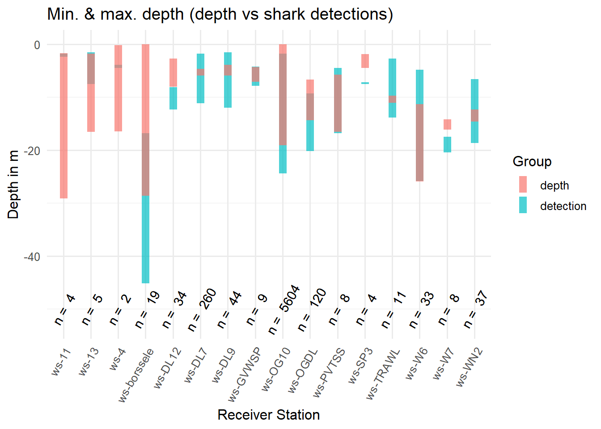
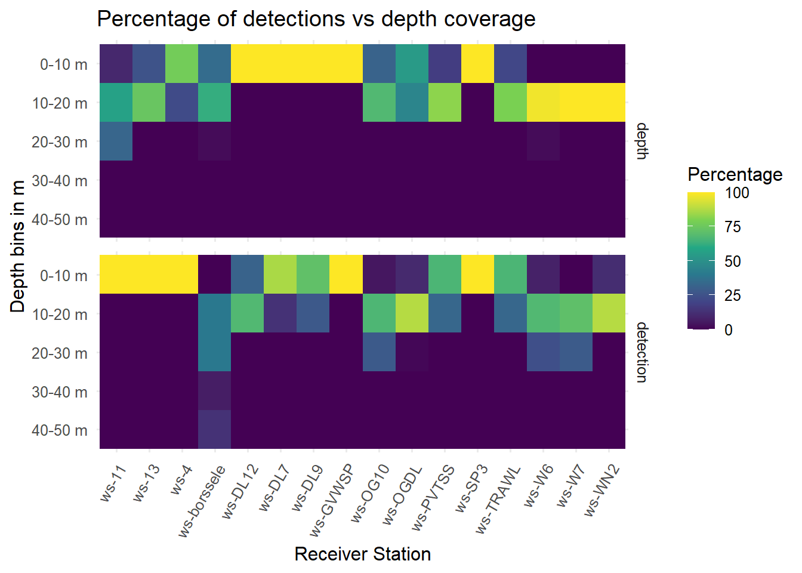

Hackathon Results
The plot shows the maximum and minimum depth of the acoustic detections and the bathymetry, for each acoustic receiver station. The bathymetry was taken from a 200m radius around the station. For the acoustic detections, the amount of detections is noted for each station.
The graph shows that for quite many stations, the sharks went deeper than the deepest depth from the bathymetry dataset (i.e. the blue bars go deeper than the pink ones). This could have several reasons, e.g. 1) the bathymetry changing over time (although the dataset is from 2019, so from within the detection period), 2) the bathymetry being not highly resolved enough, or 3) the sharks being detected further away than the chosen radius of 200m.
For 5 of the stations (11, 13, 4, PVTSS, W6) the sharks are detected in shallower depths than the shallowest seafloor depth. This indicates that some sharks use the water column. The number of detections per station ranges from 2 to 5604, so this biases the comparison. 89% of detections are at station OG10, where detections range between 2 and 25m and the bathymetry ranges between 0 and 20m. The fact that sharks are detected in shallow waters around that station does not rule out diel migration behaviour to feed.

The heatmap shows the percentage of detections and depth measurements falling into 10m depth bins, from 0m to 50m. The heatmap on the top shows the bathymetry/seafloor depth, the heatmap on the bottom shows the depths of the acoustic detections.
Here we can see that for station 11, 13 and 4, the sharks only used the shallower parts (0 -10m depth) around the station, although there were deeper waters ‘available’ (e.g. for station 13, ~75 % of seafloor around the station are 10-20m deep).
For stations DL-12, DL-7 and DL-9, we see that the seafloor is never deeper than 10m according to the bathymetry dataset, but that sharks are detected deeper than that (i.e. ~65% of detections are in 10-20m depth at station DL-12).
Station OG10 has by far the most detections so the results are most robust. There, ~65% of both seafloor depth and acoustic detections are between 10 and 20 m. Only 4% of detections are between 0 and 10m (compared to 32% of depth), indicating that the sharks don’t use this depth much around this station. Instead, ~30% of detections fall into the 20-30 depth bin (but in the bathymetry there is no area that deep around the station). This indicates both that the bathymetry dataset and the acoustic detections don’t overlap very nicely, but also that the sharks are close to the seafloor around station OG-10.
Figure of the depth (m) in function of the Tag Serial Number in the station has the most detections (i.e., ws-OG10). Most sharks range over a depth of -5 up to -25 m. It’s important to notice that shark 1903302 only had 2 detections.